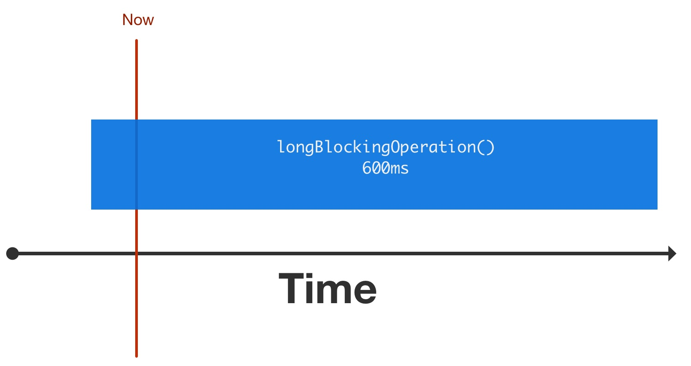
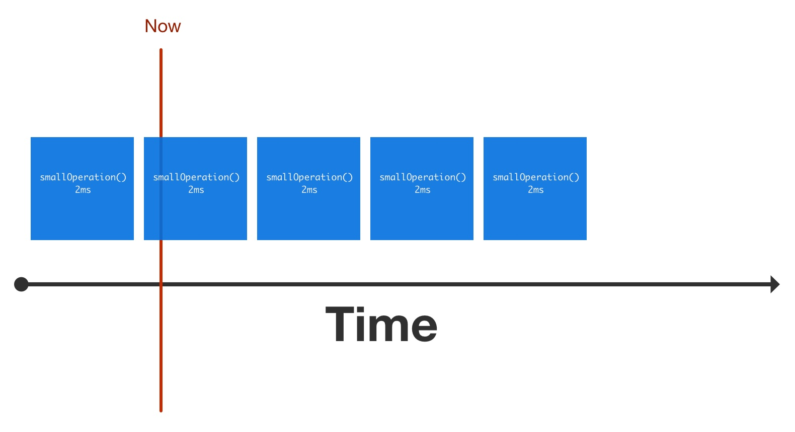
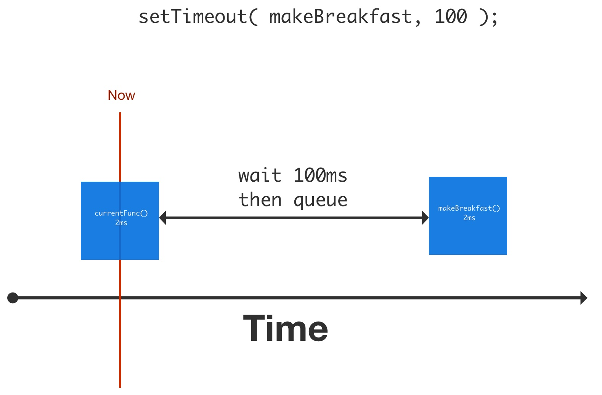

Frontend Development 101
Lesson 2
Event Loop & Async
Resources
Event Loop
Javascript is single-threaded. Updating the DOM (slow) and factoring integers (also slow) need the same resource.
What is it?
It's a queue of functions to call. When the stack is empty, the next function is popped from the queue and executed.
Blocking the Event Loop

Unblock the Event Loop

Using setTimeout

Takeaway
Not blocking the event loop is considered good practice.
Asynch-ronous Operations
You know, like AJAX requests. Or database queries.
Principle
They do not interrupt control flow. When an async operation is finished, the "completed handler" is put into the event loop.
Callback
A function that's executed when a (possibly long-running) operation finished.
function fetchSomeData( callback ) {
// window.fetch
// https://github.com/github/fetch
fetch( 'pharos.zalando.net/api/roadmaps' ).then( callback );
// note: returns undefined!
}
// executes immediately, but no guarantees about
// when the callback will do
fetchSomeData( function( data ) {
console.log( 'fetched me some', data );
});
// the parser just goes on and executes the next statement
console.log( 'i am probably executed first' );
Nobody likes callbacks
They get unwieldy fast. Also, what about error handling? Or waiting for multiple things in parallel?
getOneThing( function(one) {
getSecondThing( function(second) {
doTaskOne( function() {
doNextTask( function() {
// it's the
finalCallback();
// *didi diiii didi-didi*
});
});
});
});
“The callback pyramid of doom”
Promises (Futures)
A proxy for a value not necessary known when the Promise is created.
How do they even work?
A promise may either be
- pending
- resolved
- rejected
Once a promise is rejected or resolved, it does not alter its state again.
Create a Promise
function doStuff() {
function executor( resolve, reject ) {
/* do stuff */
if ( !error ) {
resolve( value );
} else {
reject( error );
}
}
return new Promise( executor );
}
Promises are chainable
doStuff()
.then( doOtherStuff )
.then( evenMoreStuff ) // works if doOtherStuff returns a promise too
.catch( handleError );
You can wait for multiple promises
Promise.all([
oneThing(),
twoThings(),
threeThings()
])
.then( doStuffWithThreeThings );
Also maybe: Communicating Sequential Processes
Takeaway
Promises are the current way to handle async things. They are available natively in modern browsers except IE and Opera Mini.
Example